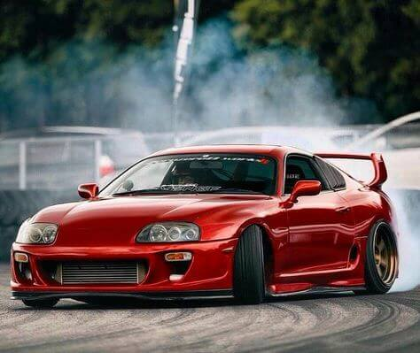
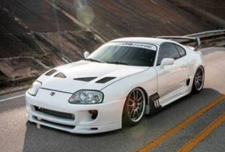

Histoire
Popularisée par le film Fast and Furious et les jeux vidéo, la Toyota Supra MKIV n’est pas le monstre indomptable que certains imaginent. Dans sa configuration d’origine, c’est une GT, une redoutable dévoreuse de kilomètres, non dénuée de raffinement.
Affichée à un tarif beaucoup plus élevé que sa devancière, la quatrième génération de Supra n’a pas connu le succès en Europe. Née en 1993, retirée du marché européen en 1996, elle est pourtant devenue l’une des GT japonaises les plus emblématiques quelques années plus tard pour toute une jeune génération.
En Europe, les choses sont simples, tant la carrière de la MKIV a été brève. Lancée au second semestre 1993, elle a été retirée du catalogue dès la fin 1996, à cause de ventes trop faibles et de normes anti-pollution durcies, sans avoir connu de changement notable.
Au Japon, en revanche, elle a été commercialisée jusqu’en 2002, et a bénéficié d’un petit lifting dès le printemps 1996. En plus de nombreux succès sportifs de 1995 à 2003 aux légendaires 24 Heures du Mans, à la montée du Pikes Pea k et à d'autres championnats internationaux.
La Supra acquit un statut légendaire auprès des fans de Toyota, des mordus de tunning et des passionnés d'automobile dans le monde entier. Si la production de Supra a cessé en 2003, certains espèrent voir une nouvelle supra sortir dans un avenir proche.
